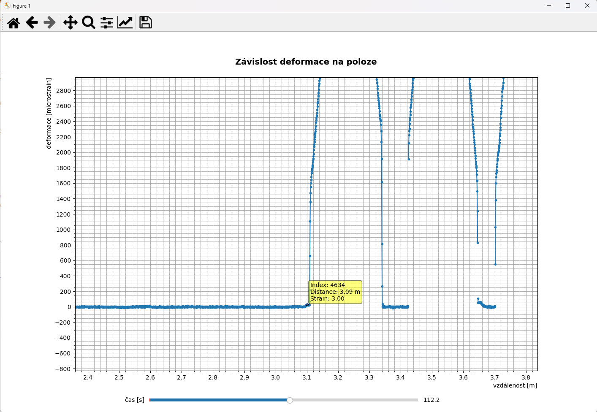
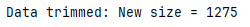
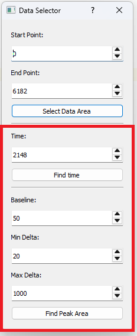
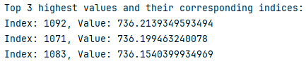
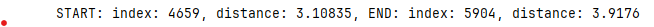
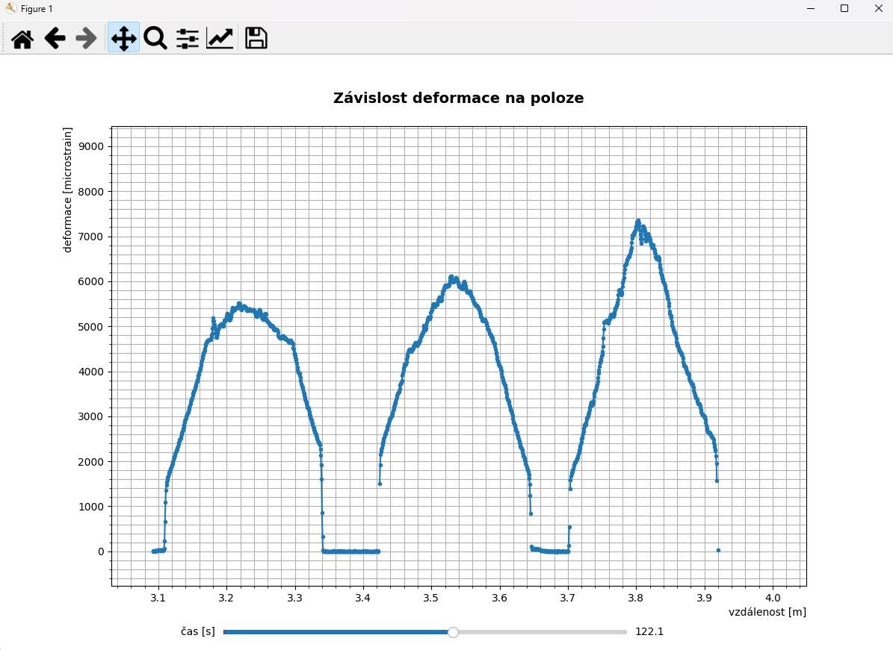

Program Stress Measurement Viewer poskytuje uzivateli jednoduchy graficky nahled namerenych dat, ktera jsou ve formatu *.tsv. Program umoznuje nalezeni vyznamnych oblasti (pro dalsi analyzu) a orezani nepotrebnych dat.
File -> Open Nacte *.tsv soubor, obsahujici data z mereni.
Pro graficky nahled namerenych dat lze pouzit graf zavislosti deformace na poloze.
Z grafu je potreba odecit pocatecni a koncovy bod oblati zajmu. Po kliknuti na bod grafu se zobrazi anotace s udaji o datovem bode. Pro vyber oblasti nas nejvice zajima polozka index.
 Edit -> Data Area otevre dialogove okno, ktere umoznuje vybrat cilovou oblast dat.Po stisknuti tlacitka "Select Data Area" je do prikazoveho radku vytistena informace kolik datovych bodu obsahuje novy soubor dat.
Smyslem automatizovaneho vyberu dat je poskytnout uzivateli rychly odhad oblasti, na kterou se ma zacilit pri hledani peaku.
 "Find time"Po stisknuti tlacitka "Find time" je do prikazoveho radku vytisten navrh tri casovych oblasti [jednotka je 0,1 s], ve kterych je vhodne hledat oblast s peaky. Casovy udaj je pocitan jako absolutni hodnota aritmetickeho prumeru vsech hodnot deformace v jednom case mereni. Vybereme jednu hodnotku a zadame do spinboxu "Find time"
 "Find Peak Area"Po stisknuti tlacitka "Find Peak Area" je do prikazoveho radku vytisten navrh pocatnecniho a koncoveho bodu oblasti s peaky. Indexy zadame do spinboxu "Start point" a "End Point"  Kriteria podle kterych se vyhledava oblast s peaky.
Ve vybrane oblasti dat muzeme provadet dalsi analyzu...
Click on Help > About verze aplikace, autor.